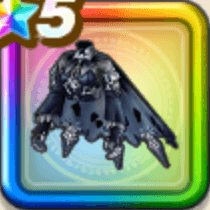

コープスケープ
攻略班 9.5点 / ヒャド属性耐性+5%ジバリア属性耐性+5%ギラ属性耐性+5%ジバリア属性耐性+5%スキルの体技ダメージ+10%【夜間】全属性ダメージ+2%ドルマ属性斬撃・体技ダメージ+4%ジバリア属性斬撃・体技ダメージ+4%
くわしい特徴
【レベル別習得スキル】 Lv1ヒャド属性耐性+5% Lv8ジバリア属性耐性+5% Lv10スキルの体技ダメージ+10% Lv12【夜間】全属性ダメージ+2% Lv15ドルマ属性斬撃・体技ダメージ+4% Lv15ジバリア属性斬撃・体技ダメージ+4% Lv20ギラ属性耐性+5% Lv23守備力+5 Lv25ジバリア属性耐性+5% 【限界突破スキル】 1凸攻撃力+12 2凸すばやさ+12 3凸守備力+12 4凸さいだいHP+12